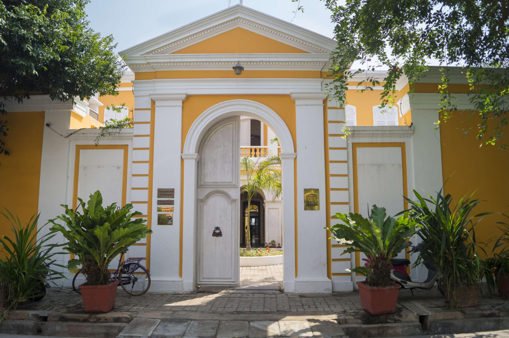
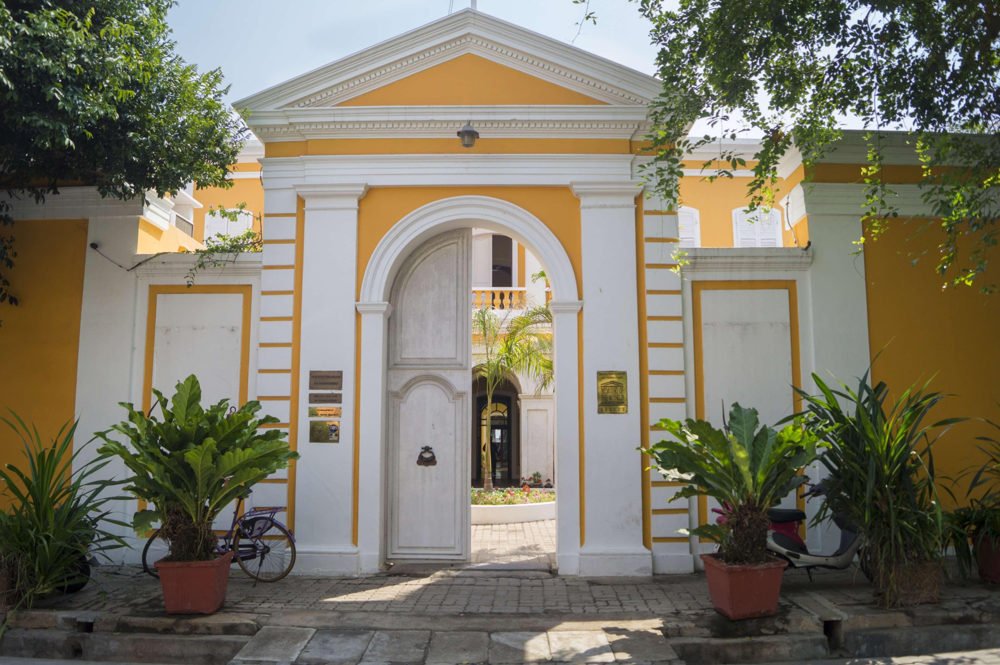

Weekend Getaways - Explore relaxing places and spend some quality time on your weekend getaway. Check out top national parks, temples, witnessing the royalness of an old palace, and more.


Kasauli is a town and cantonment, located in the Solan district of the Indian state of Himachal Pradesh. The cantonment was established by the British Raj in 1842 as a Colonial hill station,[1] 25 km (16 mi) from Solan, 77 km (48 mi) from Shimla, 58 km (36 mi) from Chandigarh, and 94 km (58 mi) from Ambala Cantt (Haryana), an important railway junction of North India.
 
Pondicherry French pronunciation: is the capital and most populous city of the Union Territory of Puducherry in India. The city is in the Puducherry district on the southeast coast of India and is surrounded by the Bay of Bengal to the east and the state of Tamil Nadu, with which it shares most of its culture, heritage, and language.
Mussoorie is a hill station and a municipal board, in Dehradun city in the Dehradun district of the Indian state Uttarakhand. It is about 35 kilometres (22 mi) from the state capital of Dehradun and 290 km (180 mi) north of the national capital of New Delhi. The hill station is in the foothills of the Garhwal Himalayan range. The adjoining town of Landour, which includes a military cantonment, is considered part of "greater Mussoorie", as are the townships Barlowganj and Jharipani.

Lonavala-Khandala is a hill station and a Municipal Council in the Pune district, Maharashtra, India. It is about 64 km (40 miles) west of Pune and 96 km (60 miles) to the east of Mumbai. It is known for its production of the hard candy chikki and is also a major stop on the railway line connecting Mumbai and Pune. From the Pune suburbs, local trains are available from Pune Junction. The Mumbai-Pune Expressway and the Mumbai-Bengaluru highway both pass through Lonavala.

Jaipur is the capital and the largest city of the north-western Indian state of Rajasthan. As of 2011, the city has a population of 3.1 million, making it the tenth most populous city in the country. Located 268 km (167 miles) from the national capital New Delhi, Jaipur is also known as the Pink City due to the dominant color scheme of its buildings in old city.